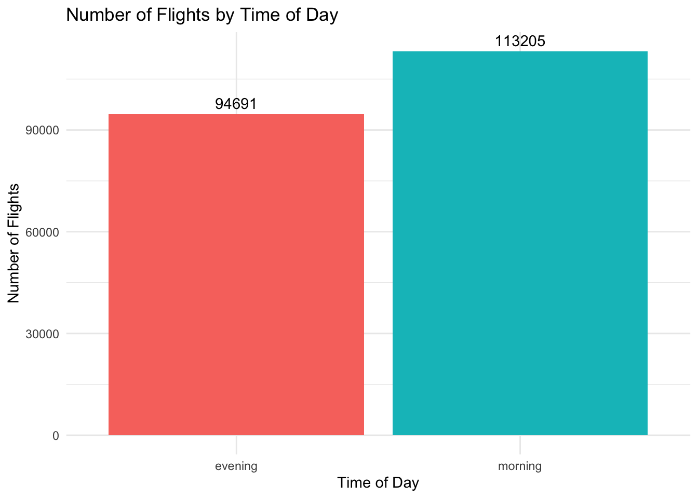
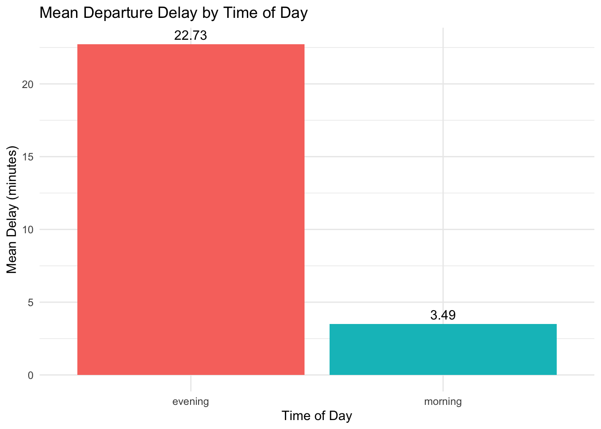
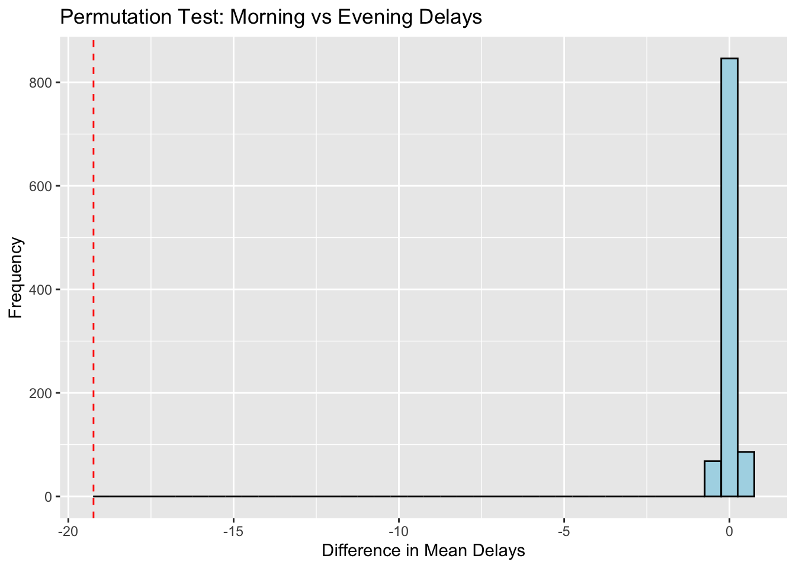
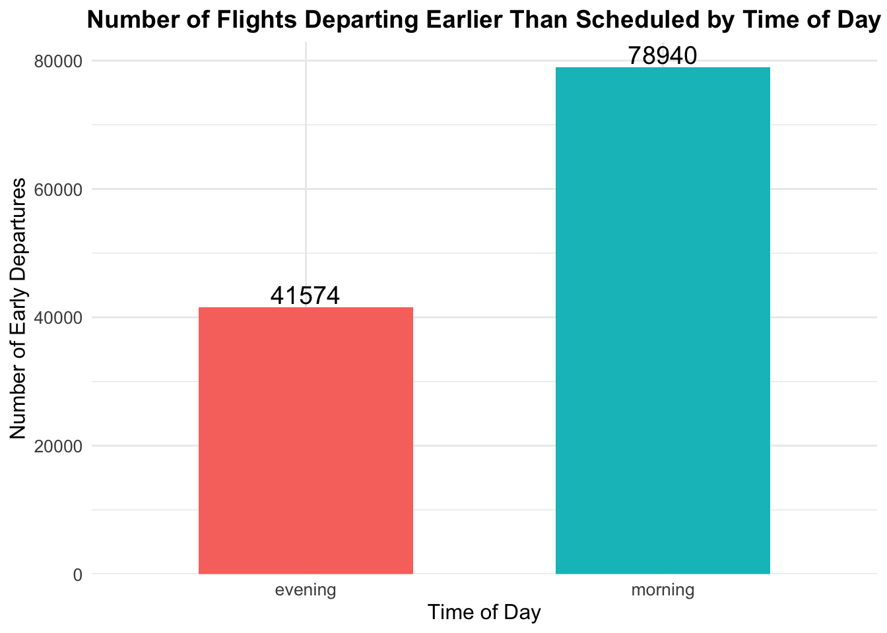

library(nycflights13)
library(dplyr)
library(purrr)
library(ggplot2)
library(DT)NYC Flights Analysis
Morning vs. Evening Departure Delays
Are departure delays significantly different between morning and evening flights?
Objective: In this analysis, I will investigate whether there is a significant difference in departure delays between morning and evening flights using data from the nycflights13 package. This data set contains all the relevant information of a particular flight schedule. To perform this analysis, I will perform a permutation test, where I will shuffle the time-of-day labels (morning/evening) and repeatedly calculate the difference in mean departure delays. This will help simulate the null hypothesis, which assumes that the time of day has no statistical significance on departure delays. By comparing the observed difference in delays to this simulated distribution, I will assess the statistical significance of the observed difference.
[Null Hypothesis] There is no difference in the mean departure delays between morning flights and evening flights.
# Create a new table from original to add a new column indicator morning or evening flight
flights <- nycflights13::flights |>
filter(!is.na(dep_delay)) |>
mutate(time_of_day = case_when(
hour >= 5 & hour < 11 ~ "morning",
hour >= 17 & hour < 23 ~ "evening",
TRUE ~ "other"
)) |>
filter(time_of_day != "other") # Exclude flights that are not in the morning or evening
# Display the first 5 rows as an interactive table
datatable(
flights[1:5, ], # Select the first 5 rows
options = list(
pageLength = 5, # Display 5 rows per page
dom = 't', # Show only the table (no search box, etc.)
scrollX = TRUE # Enable horizontal scrolling
),
caption = "First 5 Rows of Flights Data"
)We are using the nycflights13 data which contains the flight information in New York airports in 2013. The above sample table includes all the relevant information for each flight schedule and also has a new column called time_of_day as an indicator for whether the flight is in the morning or in the evening.
Most importantly, the data shows the departure delay time (in minutes). A positive value means the flight was delayed. A negative value means the flight departed earlier than planned schedule. A value of zero indicates the flight departed on time. We will first define morning and evening flights. Morning flights are flights departing between 5:00am and 11:00am. Evening flights are flights departing from 5:00pm and 11:00pm (ex. First row, dep_time 517 means departure time is at 5:17am). We removed the flights that are not within these time ranges.
Let’s first check how many morning and evening flights there are, respectively.
# Count the number of flights for each time_of_day
flight_counts <- flights |>
group_by(time_of_day) |>
summarize(flight_count = n())
# Create a bar chart
ggplot(flight_counts, aes(x = time_of_day, y = flight_count, fill = time_of_day)) +
geom_bar(stat = "identity") +
geom_text(aes(label = flight_count), vjust = -0.5) +
labs(
title = "Number of Flights by Time of Day",
x = "Time of Day",
y = "Number of Flights"
) +
theme_minimal() +
theme(legend.position = "none")
There are more morning flights than evening flights. Moreover, the difference is noticeable, with about 20,000 more flights classified as morning.
Below we have the average delayed time for morning and evening flights.
library(ggplot2)
# Calculate mean delays
mean_delays <- flights |>
group_by(time_of_day) |>
summarize(mean_delay = mean(dep_delay, na.rm = TRUE))
# Create the bar chart
ggplot(mean_delays, aes(x = time_of_day, y = mean_delay, fill = time_of_day)) +
geom_bar(stat = "identity") +
geom_text(aes(label = round(mean_delay, 2)), vjust = -0.5) +
labs(
title = "Mean Departure Delay by Time of Day",
x = "Time of Day",
y = "Mean Delay (minutes)"
) +
theme_minimal() +
theme(legend.position = "none")
Then we calculate the observed differences.
obs_diff <- flights |>
group_by(time_of_day) |>
summarize(mean_delay = mean(dep_delay)) |>
summarize(diff = diff(mean_delay)) |>
pull(diff)Observed Difference in Mean Delays (Morning - Evening): -19.23765 minutes[Permutation Test] We’ll shuffle the time labels (morning or evening) 1000 times and calculate the difference in mean delays for each permutation.
set.seed(47)
null_dist <- map_dbl(1:1000, ~ {
flights |>
mutate(shuffled_time = sample(time_of_day)) |>
group_by(shuffled_time) |>
summarize(mean_delay = mean(dep_delay), .groups = "drop") |>
summarize(diff = diff(mean_delay)) |>
pull(diff)
})Let’s plot the null distribution with observed difference
ggplot(data.frame(null_dist), aes(x = null_dist)) +
geom_histogram(binwidth = 0.5, fill = "lightblue", color = "black") +
geom_vline(xintercept = obs_diff, color = "red", linetype = "dashed") +
labs(
title = "Permutation Test: Morning vs Evening Delays",
x = "Difference in Mean Delays",
y = "Frequency"
)
# Calculate p-value
p_value <- mean(abs(null_dist) >= abs(obs_diff))P-value: 0 Results
The red dashed line represents the observed difference in mean delays between morning and evening flights. The histogram represents the differences in mean delays generated under the null hypothesis (shuffling the time labels).
A p-value of 0 means that none of the 1000 permutations generated a difference in mean delays as extreme (or more extreme) as the observed difference. This indicates that the observed difference is highly unlikely to have occurred by chance if the null hypothesis were true.
Since the p-value is 0, this provides strong evidence against the null hypothesis. You would reject the null hypothesis and conclude that the time of day (morning vs. evening) may be correlated to departure delays.
The visualization supports this as the red line falls outside the range of the simulated null distribution values, highlighting that the observed difference is not consistent with the null hypothesis assumption.
Greater Insights
This study provides strong evidence for the correlation between time of day and average departure delay time. According to the analysis, evening flights have nearly a 20 minute longer delays than morning flights. This is interesting given the fact that there were significantly more morning flights than evening flights. While more number of flights does not automatically indicate more flight traffic, the results are interesting.
Just to dive, some potential reasons could explain the longer delays for evening flights. Below are some factors to consider:
- Cumulative Delays Throughout the Day: Flights in the evening are often impacted by delays that build up over the day (e.g., late arrivals, extended turnaround times).
- Weather Conditions: Thunderstorms and other adverse weather conditions are more common in the late afternoon or early evening, especially in summer months.
- Air Traffic Congestion: Evening hours are often a peak time for flights returning from major business or leisure destinations, leading to increased congestion in the air and at the airport.
- Crew and Aircraft Rotation: If an aircraft or crew is late arriving from an earlier flight, it can cascade into delays for subsequent evening flights.
- Runway Closures or Maintenance: Some airports schedule runway or terminal maintenance for late evenings, which can cause operational disruptions.
To find some empirical reasons directly from the data, let’s look at early departure flights (those that have negative values for dep_delay column). The observed means of departure delays that we calculated in the above analysis takes into account all flights, regardless of whether their status was on time, early departure, or delayed departure. If either morning or evening flights have a significant number of early flights, then, that may potentially have affected the averages.
# Filter flights with dep_delay < 0 and group by time_of_day
early_departures <- flights |>
filter(dep_delay < 0) |>
group_by(time_of_day) |>
summarize(early_flights = n())
# Create a bar chart with adjusted limits and label position
ggplot(early_departures, aes(x = time_of_day, y = early_flights, fill = time_of_day)) +
geom_bar(stat = "identity", width = 0.6) +
geom_text(aes(label = early_flights), vjust = -0.2, size = 5) +
labs(
title = "Number of Flights Departing Earlier Than Scheduled by Time of Day",
x = "Time of Day",
y = "Number of Early Departures"
) +
theme_minimal() +
theme(
legend.position = "none",
plot.title = element_text(hjust = 0.5, size = 14, face = "bold"),
axis.title.x = element_text(size = 12),
axis.title.y = element_text(size = 12),
axis.text = element_text(size = 10)
) +
scale_y_continuous(expand = expansion(mult = c(0, 0.05)))
Looking at the results, there are significantly more morning flights that departed earlier than scheduled. This has contributed to the significantly lower average departure delay for morning flights. This offers some empirical evidence based on our database as to why our calculated averages have a significant difference.
While this particular caveat lends way to the argument for calculating the departure delay averages for those flights that were actually delayed, I believe this misleads the purpose of the study. You do not know whether your flight is going to be departing earlier than planned or delayed. We all expect our flights to depart on time. Therefore, simply calculating the averages for those flights that do actually get delayed misses this initial thought process. One particular flight can be delayed for some reason A. Well, that same reason A can be the basis for an early flight departure of another flight. Hence, I still believe it is more appropriate to examine all flights.
So how can we interpret these results in a broader context? The current analysis is based on flights departing from NYC airports (JFK, LGA, EWR) in 2013 and data acquired under the assumption that morning and evening flights do not have missing delay information. This means the conclusion of a significant difference in mean delays applies only to NYC flights in 2013.
For potential larger populations, we could generalize the results to other years in NYC. Similar patterns of delays (morning flights being less delayed than evening flights) might hold for other years if no major changes occurred in scheduling, infrastructure, or air traffic. It may also be possible to generalize to similar metropolitan hubs. NYC is one of the busiest air travel hubs in the US, so patterns observed in NYC might apply to other large cities with comparable air traffic and flight schedules, such as Chicago (ORD, MDW), Los Angeles (LAX), or Atlanta (ATL). However, generalization should be done cautiously and supported by additional evidence. Moreover, there may be limitations to generalization in the sense that regional factors may come into play. NYC has unique air traffic patterns due to its size, location, and volume of international and domestic flights. Other cities may not share these characteristics.